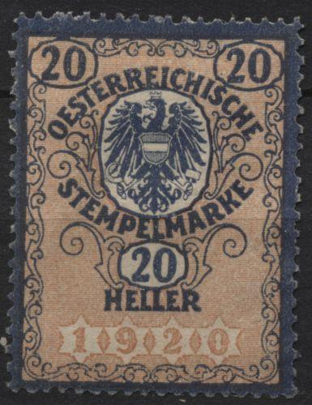
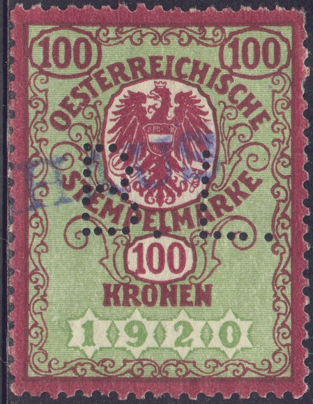
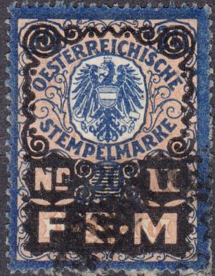

{kind=link}



{kind=link}

"1920" issue
Return To Catalogue- Austria - Austria Fiscal stamps, overview - Austria Fiscal stamps, arms types from 1850-1893 - Austria Fiscal stamps, Franz Joseph issues
Note: on my website many of the
pictures can not be seen! They are of course present in the
catalogue;
contact me if you want to purchase the catalogue.
Design with one-headed eagle, inscription: "OESTERREICHISCHE STEMPELMARKE"
 
"1920" issue
I've seen stamps with "1920" in the values 20 h blue and red, 40 h blue and red, 50 h blue and yellow, 1 K red and green, 10 K red and green, 20 K red and green, 50 K brown and green, 100 K red and green, 200 K red and green, 500 K red and green, 1000 K red and green.


5 K, but with "1920" unreadable (on purpose?)



"1920" With red "TG" (Träger Gebühr)
overprint: 40 g on 50 h and 4 S on 2 K. Also with green "1
Z.B." overprint (customs fee revenue). And another ? g and
20 g with "FEM" overprint used as freight supplement
revenue ("Nr. I" and "Nr. II").

"1922" issue, inflation period issues
With "1922" I have sen the values 2000 K, 5000 K and 10.000 K all in blue and orange.

"1923" issue

"1924" issue

"1925" issue
I've furthermore seen stamps with inscription "1925" and value in 'groschen': 1 gr, 2 gr, 5 gr, 10 gr, 20 gr, 25 gr, 30 gr and 50 gr. They all have the same colours; brown and green. Also 1 S, 1 1/2 S, 2 S, 3 S, 5 S, all brown and orange and 10 S, 20 S, 30 S, 50 S (all in green and lilac).


These 1925 stamps seem to exist with the date (deliberately?) no
longer readable.
With "1934", double headed eagle: 5 gr, 10 gr, 25 gr, 30 gr, 50 gr (all in brown and green):

1934 25 g brown and green, this type has a double headed eagle.


"1945" currency not indicated (but supposed to be
German Pfennig and Reichsmark). I've also seen 5.- brown and
green.


"1946" with currency in "SCHILLING"

"1946" issue with overprint "B.U.St." (Stock
Transfer tax)

"1946" issue, overprinted in blue with "1948"
In this overprinted 1948 design I have seen: 30 g, 50 g (all in brown and green), 1 Sh, 2 Sh, 5 Sh, 10 Sh, 50 Sh (all in blue and light green)


The same design as above but now with inscription
"1950" and value in "SCHILLING". I've seen 10
gr, 50 gr (brown and orange), 1 S, 1 1/2 S, 2 S, 3 S, 4 S, 5 S, 6
S, 10 S, 20 S, 40 S (all in purple and green) and 100 S, 200 S
(brown and lilac)
1950 stamps with "JUSTIZ" (justice) overprint
With this 1950 "JUSTIZ" overprint I have seen: 10 g, 50 g (all in green and orange), 1 S, 2 S, 3 S, 5 S, 10 S, 20 S, 50 S (all in purple and green).
{kind=link}